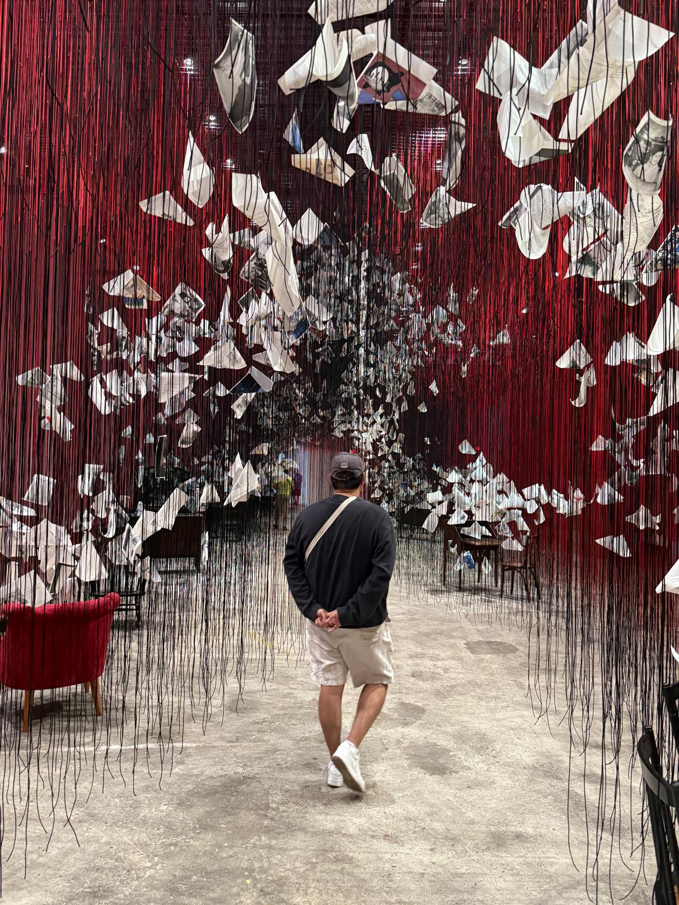
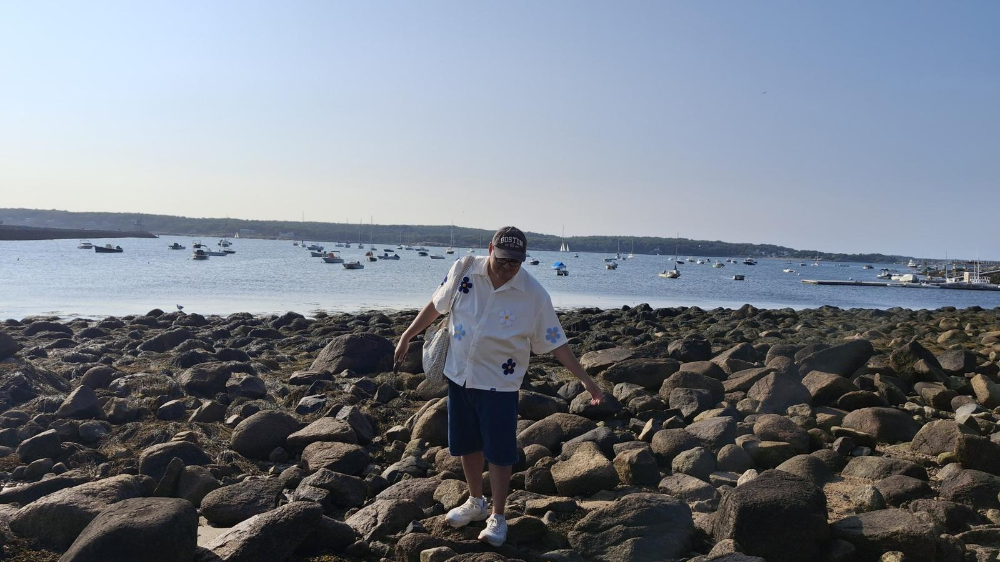
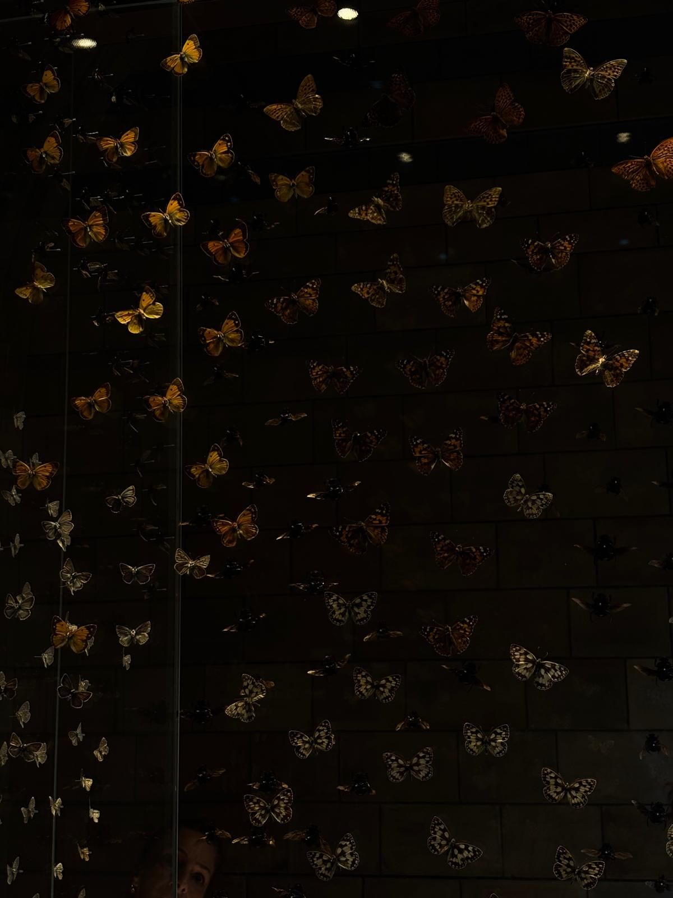
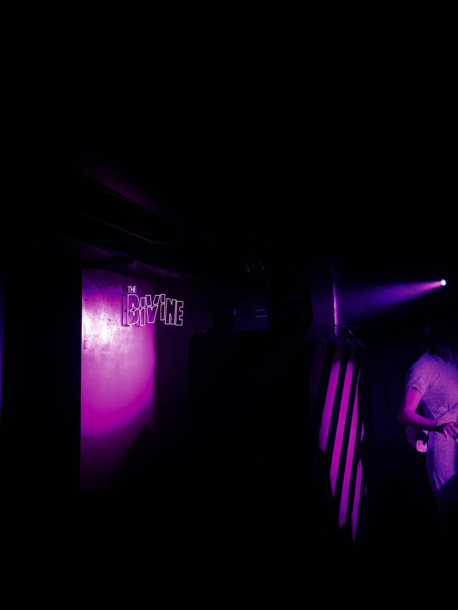

interests
// coffee
Colombian by birth, PhD student by choice — both require industrial quantities of coffee. From a tinto on a Bogotá street to a cortado in a Boston café, coffee is ritual, fuel, and the only reason 8am regressions are survivable.
// data_for_fun
When I'm not running regressions for work, I'm running them for fun. Exploratory data analysis, data visualization in Python and R, and endlessly asking "what does this distribution actually tell us?" as a hobby. The IV estimates never lie. (They often do.)
// reading
Sci-fi, mystery, thrillers, essays, and economics books that were supposed to be beach reads. Currently alternating between academic papers, speculative fiction, and novels where someone always did it — both genres involve alternate realities with uncertain equilibria and unreliable narrators.
// music
Indie all the way — Laufey for when the data cooperates, Florence and the Machine for when it doesn't. Lo-fi for writing sessions, something dramatic and orchestral when the deadline is truly dire.
// exploring
From Bogotá to Boston, I love wandering new neighborhoods, finding the best empanada within walking distance of campus, and navigating the MBTA with only mild anxiety. Every city is a natural experiment.
// video_games
From narrative-driven mysteries to anything that lets me make morally questionable decisions for science. Video games are the only medium where you can test behavioral economics theories in real time and blame the RNG when things go wrong.
// horror_films
Horror, mystery, and thrillers — the genres where information asymmetry is a plot device. There's something deeply behavioral about watching characters make objectively bad decisions under uncertainty. Academically fascinating. Personally terrifying. Worth it.
// biking
Navigating Boston by bike is equal parts exercise, urban exploration, and a live experiment in risk tolerance. Every ride is an instrumental variable for how much I trust traffic lights. The Charles River path, however, is genuinely beautiful.
fun_facts.py
fun_facts = [ "Has survived both Colombian summers and Boston blizzards", "Once tracked people's eyes while they made risky decisions (for science)", "Reads spoilers on purpose — knowing the ending makes the journey more exciting, not less", "Can explain the Ellsberg Paradox at a party and somehow still gets invited back", "Still refers to the MBTA as 'the T' despite being confused by it daily", "Has a bibliography manager more organized than their desk", ]
print(random.choice(fun_facts))
moments



